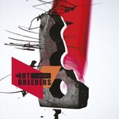
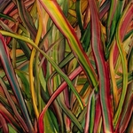
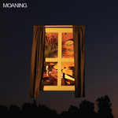
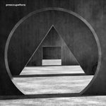
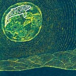
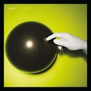

Quick Takes (March 2018)
Welcome to this month's Quick Takes! Carl & I really gave a lot of thought to this jam-packed month, and though we weren't able to write about every album we would've liked, at least we managed to cover the cream of the crop.
One of us one was more enthusiastic, though, as I managed to nominate two Believe the Hype entries: Hot Snakes' triumphant art-punk return, Jericho Sirens, and Mount Eerie's thoughtful companion piece to A Crow Looked at Me, Now Only. If you ask me, I personally liked this one more than the former. As for Carl, he gave a very positive endorsement of Preoccupations' latest, New Material, an album I rather liked that is just shy of an 8 to me. Though we both agreed that Jack White's more experimental return isn't exactly the bee's knees. And what did you all think of the new Kacey Musgraves? Am I missing the mark for not believing the hype?
What were your favorite albums during the month of March? Anything we didn't get to review on our site that we should've? And if you'd like us to do a special edition of Quick Takes, which kind of theme would you like us to do? Late-nineties top Billboard chart rock albums? A compilation of eighties new-wave artists who wore Aqua Net? The possibilities are endless. You can always reach us on Facebook, or on our official twitter page. - Juan
...
The Breeders
All Nerve
(4AD)
Kim Deal’s iconic alt-pop foursome has reverted to its Last Splash lineup 25 years on from its release, and with All Nerve, The Breeders are in effortlessly confident form. Its run of songs is understated, and despite lasting barely half an hour, the record manages to evoke a delicious dose of fuzz in a manner that doesn’t stick around long enough to outstay its welcome. The band's rhythm section is the keystone, keeping the sound tethered even when the pace slackens. This, in turn, allows the Deal sisters’ harmonies to resonate regardless of the terrain and the licks to vary in their elasticity and adapt to their surroundings, all while Kim Deal’s virtuous wordplays weave their way into the gummiest of textures. All Nerve is not in the same league as Last Splash, but it is an exhibition of a band with alarmingly strong musical chemistry making relevant music - and enjoying doing so - a quarter of a century on from their most notable landmark. [7/10] Carl Purvis
Gengahr
Where Wildness Grows
(Liberator Music)
For Gengahr, what eventually became Where Wildness Grows typified the ‘difficult second album’ cliche. Frontman Felix Bushe admitted that when the band were putting together this body of work, it was a struggle to come up with a record that they were happy with. 2015 debut A Dream Outside was a strong effort - a patchwork of hooky indie rock that boasted infectious grooves, artful yet accessible intricacies and an uncanny ability to melt all of its components together seamlessly. With their second LP, the accessibility is still there, with the sound still as soluble as dioralyte. There are, however, too many moments on this record - something that wasn’t an issue with their debut - where the solubility is too much. The first two tracks (two of the three singles from the album) are irritatingly underwhelming, and only Carrion (the third of the aforementioned singles) conveys any of the urgency and compactness required to really grab a listeners' attention. [5/10] Carl Purvis
 Hot Shakes
Hot Shakes
Jericho Sirens
(Sub Pop)
Back in 1999, Hot Snakes became the perfect synthesis of what the punk/hardcore San Diego scene had to offer. Led by Rick Froberg and John Reis', who were core members of cult act Drive Like Jehu, the short-lived punk band held a fast, brutal simplicity with elements of classic rock n' roll. Hot Snakes were such exemplary musicians that it'd be a disservice if they kept their music too simple, and as Jericho Sirens attests, the decade-long absence in album form has only refined their focus. Reformed with all original members and then some, Jericho Sirens has the bursting effect of a high-speed bullet that never ceases its agitated course throughout its lean thirty minutes. Packed with a surfeit of nimble guitar lines, they draw their forces together into an expertly crafted portrayal of raw anguish that surpasses any nostalgic commemoration. These mature punks sweat out their energy with vigorous and eloquent playing, and in doing so, also show their younger peers how it's done. [8/10 - Believe the Hype] Juan Edgardo Rodríguez
 Jack White
Jack White
Boarding House Reach
(Third Man Records)
With his third solo LP, Jack White hits the nail on the head just as often as he misses it spectacularly on a haphazard record. It’s a creative route that is more strange than ambitious, and with help from a band comprised of session musicians more accustomed to performing with the megastars of the hip-hop and R&B worlds, White manages to convey an absurdly spontaneous motif with excited desire and unquestionable passion for his own artistry. The album's strongest moments include opening track Connected By Love, oozing with his trademark modern take on southern soul blues and a great chorus. Over and Over and Over was once a White Stripes song, and its ferociously frantic riff announces as much from its first loop. Boarding House Reach isn’t the easiest of listens, and at times sounds like an over-excited White has just pressed 'record' and let his absurdity run amok. However, its strong moments just about outnumber the less appealing ones, and White’s own creative juices are still being harvested in abundance. [6/10] Carl Purvis
Kacey Musgraves
Golden Hour
(MCA)
Golden Hour is a pivotal departure for Kacey Musgraves. Musgraves, who's colored outside the lines of traditional country since her breakthrough debut, Same Park Different Trailer, approaches a more stately bearing. This placid maturation suits the resplendence of Golden Hour, as she crystallizes her personal reverie behind a sweeping soundscape of hushed harmonies and blithe acoustic arrangements. She makes compromises to sustain this unhurried tone - the zippy one-liners are absent, and instead, she lets her kindhearted observations flow with an open-hearted simplicity. She does blur the country influences to the point where they're almost unrecognizable, which does broaden her audience even if it diminishes crucial aspects of her personality. But as Golden Hour quietly unfurls, it makes Musgraves's intent all the more potent. It teems with romance in every sense, all while honoring the classic ballads she grew up listening to with a new sheen. Juan Edgardo Rodríguez [7/10]
Moaning
Moaning
(Sub Pop)
L.A. trio Moaning clearly have an extremely tight set-up, creating a soundscape as heavy as the Amazon air and never missing an opportunity to erect a wall of noise lacking any constructive blemishes. However, their precarious perch - straddling the ridge that separates shoegaze from post-punk - results in too many of their melodies and hooks being suffocated by the sheer density of the walls of noise that Moaning are all too happy to build. Their post-punk aspects are the most likely to enthralled - see the excellent Artificial - fusing the hallmarked sounds of Joy Division and Bauhaus with the added urgency of Placebo into the mix. The Same challenges Artificial for the record’s best track, exploding with frenetic dynamism and droning vulnerability. If Moaning could unshackle their melodic sound and avoid building their walls of sound so high on their second record, they will be another certified gem in the Sub Pop crown. [6/10] Carl Purvis
 Mount Eerie
Mount Eerie
Now Only
(P. W. Elverum & Sun)
Phil Elverum is once again writing under the most painful of circumstances on Now Only. Too early to move on past the grieving process, Elverum, who's used the Mount Eerie moniker for over fifteen years, relates thoughts and feelings in soliloquy. A companion piece to last year's A Crow Looked Looked at Me, Now Only also distills memories into stream-of-consciousness stories with a naked openness that is sometimes hard to hear. The themes still surround the passing of his wife Geneviève Elverum, but he allows some room to contemplate on what it means to begin to move forward. As opposed to the stiflingly spare Crow, Now Only is fairly more detailed, where he seeks for some equilibrium by revisiting the sullen drones of his past work. His plainspoken delivery goes through different phases, from the moment they first met (Tintin in Tibet) to how he sees her presence in his daughter's behavior (Crow, Pt. 2). But he also brings some levity to his songs, like in the title track, where he writes a near-anthem about both the certainty and unpredictability of death. Just like Crow, there's a lot to take in. But Elverum remains unflinchingly committed to his art, where he begins to accept that there may be more to life than death, after all. [8/10 - Believe the Hype] Juan Edgardo Rodríguez
Preoccupations
New Material
(Jagjaguwar)
Preoccupations (formerly known as Viet Cong) have provided a much more accessible entry point into their heavyweight, droning post-punk with their third LP - and second under their current name. The imaginatively titled New Material shows the Calgary quartet’s brighter side permeate the ultra-dense shadows of their sound more incisively than before, and although the brand of defeatism is still a major part of the record, it is nowhere near as antagonistic and more candid in its delivery. New Material - as with Viet Cong and Preoccupations before it - continues to build from an industrial base, but the melodic lines are equipped with the appropriate utensils to scale the walls of brutal noise and enjoy the view from its summit. As a result, it packs a different kind of punch - more like a series of point scoring jabs as opposed to a succession of crushing body blows. The album’s stand-out track, Disarray, is worth mentioning, with Matt Flegal’s reverb-soaked vocals glistening beneath comparatively scorched synth chords. Ultimately, New Material is another strong LP from a watertight band, and a great access point for a listener overwhelmed by the oppressive brutishness of their previous LPs. [7/10] Carl Purvis
Superorganism
Superorganism
(Domino)
Superorganism share a tender backstory. The London-based collective first exchanged ideas spread across multiple continents via the internet, which sounds remarkable until you realize that it's a perfectly reasonable way to coalesce in this current age. And much of Superorganism, their self-titled effort, sounds like it was randomly cobbled together even if they maintain a pop-minded foundation. Somehow, they piece it into a haphazard sound collage suffused with glitchy electronic sounds, sweet indie-rock guitars and loads of makeshift samples. And they do succeed early on the album with a trifecta of inventive singles - Nobody Cares, especially - that, even when loaded with a curio of sounds, prove they've taken great care in assembling a listenable experience. But the album quickly loses itself into a tasteless, gimmicky wormhole of hideous sounds that grate the ears. Superorganism are onto something here, but as it stands, their erratically-paced scheme is a passable novelty. [4/10] Juan Edgardo Rodríguez
Suuns
Felt
(Secretly Canadian)
Suuns' absence of any tangible musical association is what makes their records so alluring. The Montreal quartet's minimally abstruse sound falls in a middle ground between electronica and indie rock but also doesn't sympathize with either, which explains their unclassifiable nature. And Felt, their fourth full-length, is their boldest statement yet. Whereas they've previously attempted to make their cut-up arrangements somewhat more coherent, they take further steps toward disguising them in repeated shards of noise. That's not to say that Felt has a rhythmic core - songs like Baseline and Watch You, Watch Me channel the urgency of krautrock with its pulsing keyboard melodies and throbbing bass lines. But for the most part, they prefer to indulge in their experimental methods with ink blot-tinged recondite textures (Moonbeams) and looped, anxiety-ridden flourishes (Daydream). On Felt, Suuns are one step closer to creating a language they can call their own. [7/10] Juan Edgardo Rodríguez
18 April, 2018 - 04:14 — No Ripcord Staff